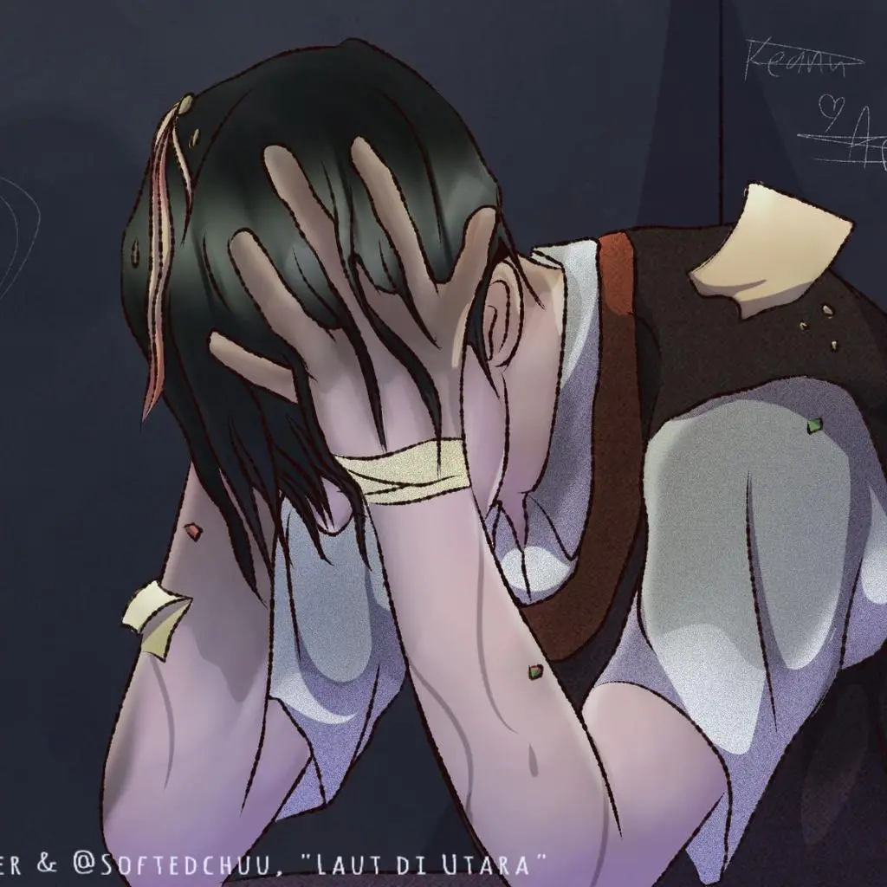
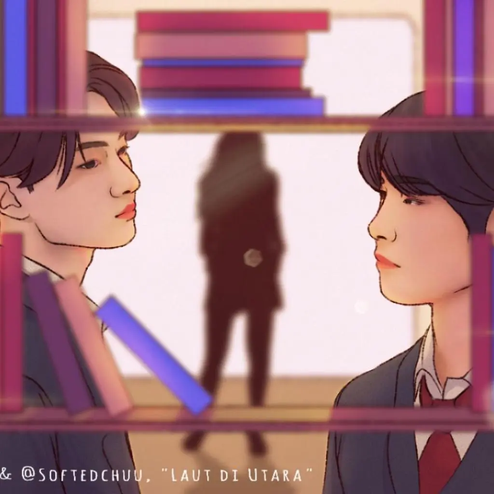
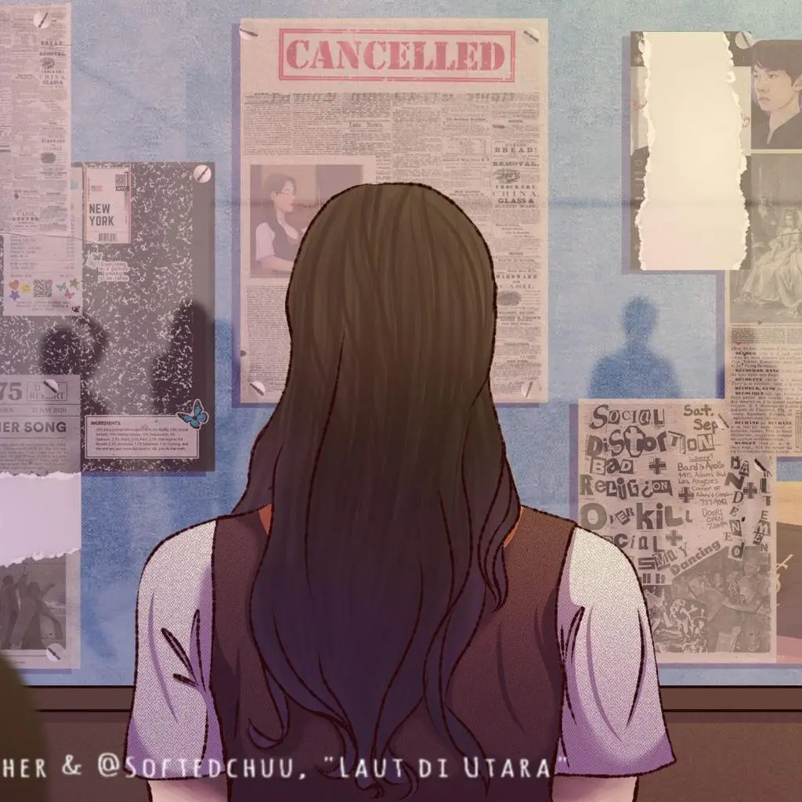
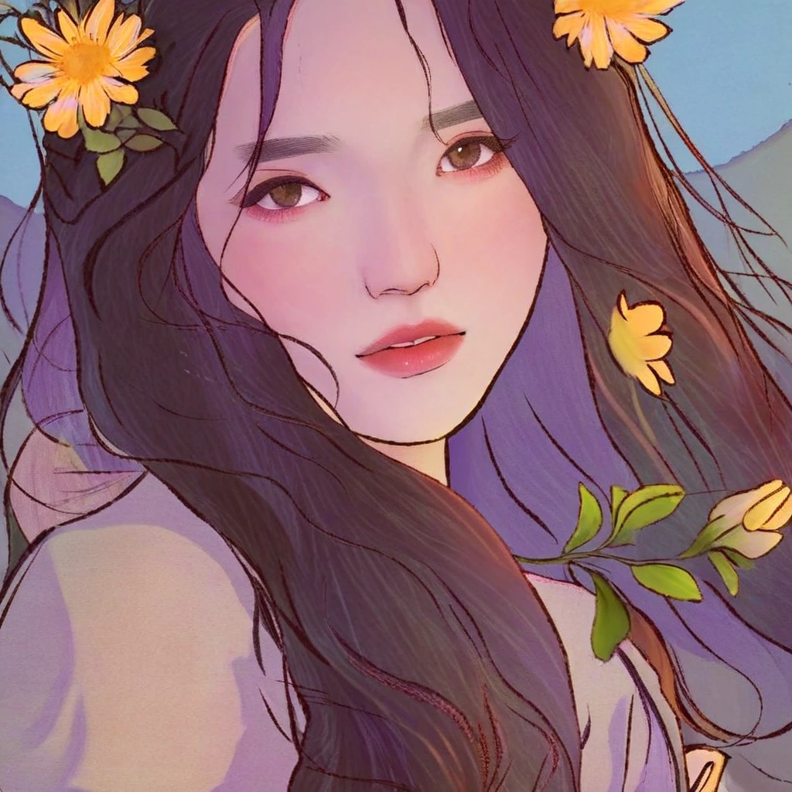

What I Did
I prepared the image–caption dataset, configured and trained four LoRA variants, generated evaluation images, and analyzed quantitative metrics and human feedback for my individual final project.
Visualizing Indonesian novel narratives with Stable Diffusion XL and LoRA fine-tuning.
Undergraduate research · Telkom University · 2026
SDXL adaptation for
Indonesian novel illustration, with a controlled comparison of LoRA rank and batch size.
This final project investigates whether Stable Diffusion XL can be adapted to illustrate Indonesian novel narratives using Low-Rank Adaptation (LoRA). The experiment compares four configurations to understand how adapter rank and batch size affect visual quality, text alignment, and training stability.
Which rank–batch combination offers the most useful balance across multiple evaluation metrics on this dataset?
I prepared the image–caption dataset, configured and trained four LoRA variants, generated evaluation images, and analyzed quantitative metrics and human feedback for my individual final project.
A completed research experiment in dataset preparation, parameter-efficient adaptation, and model evaluation. This page documents the study rather than a deployed illustration service.
The dataset was collected from Wattpad: 90 novel covers from multiple titles and 120 scene illustrations from Laut di Utara: The Northern Sea. Each image was paired with a caption, producing 210 training pairs.
Center-crop to a square, then resize to 1024 × 1024 pixels.
Generate visual descriptions automatically using BLIP.
Prefix each caption with LutNS to associate it with the target visual style.
Store the image–caption metadata in JSONL for training.
Example below illustrates the caption format, it is not a downloadable training record.



The sample images are retained from the portfolio assets. They are shown as dataset examples without assigning unverified captions.
LoRA adapts SDXL through low-rank weight updates instead of full fine-tuning. The study varies rank (16 or 32) and batch size (8 or 16), while keeping the reported core training settings constant.
The seed above is the reported training seed, not an asserted seed for the gallery images.
| Scenario | LoRA rank | Batch size | Epochs | Total steps |
|---|---|---|---|---|
| S1 | 16 | 8 | 100 | 2,700 |
| S2 | 16 | 16 | 100 | 1,400 |
| S3 | 32 | 8 | 100 | 2,700 |
| S4 | 32 | 16 | 100 | 1,400 |
| Scenario | Mean loss | Std. deviation | CV (%) ↓ |
|---|---|---|---|
| S1 | 0.105651 | 0.042119 | 39.87 |
| S2 | 0.105842 | 0.036204 | 34.21 |
| S3 | 0.105194 | 0.041886 | 39.82 |
| S4 | 0.106073 | 0.037130 | 35.00 |
S2 has the lowest loss variability, with S4 close behind. Lower training loss alone does not establish better generated images. At equal epochs, the larger batches result in fewer optimization steps.
These images are retained from the project’s existing output assets. Scenario IDs, inference settings, and exact prompt–image mappings have not been verified against experiment logs, so the gallery is separate from the measured scenario comparison below.

Evaluation used the same 165 prompts, randomly selected from dataset metadata, for all four scenarios. Each prompt produced four variations: 660 images per scenario, or 2,640 images overall.
| Scenario | FID ↓ | CLIP ↑ | PSNR (dB) ↑ | SSIM ↑ |
|---|---|---|---|---|
| S1 | 132.49 | 27.91 | 9.498 | 0.403 |
| S2 | 135.61 | 28.12 | 9.564 | 0.413 |
| S3 | 127.29 | 27.52 | 9.472 | 0.414 |
| S4 · selected | 129.91 | 27.77 | 9.594 | 0.416 |
Bold values indicate the best score among these four scenarios. ↓ Lower is better; ↑ higher is better. These are study-specific scores, not universal quality thresholds.
FID compares generated and reference image distributions; S3 scores lowest. CLIP measures image–text alignment; S2 scores highest. Neither model leads across all metrics.
PSNR and SSIM compare outputs with reference images. S4 leads on both, but similarity to a reference is only one aspect of a useful narrative illustration.
The thesis selects S4 for its balance across the reported metrics: highest PSNR and SSIM, with FID and CLIP scores between the best and worst observed values. This is a multi-metric decision, not a claim that S4 wins every measure.
40 respondents rated 32 prompt–image questions using a 1–5 Likert scale for image–prompt suitability. The study reports a total score of 4,585 out of 6,400.
Maximum score = 40 respondents × 32 questions × 5 = 6,400
Normalized score = 4,585 / 6,400 × 100 = 71.64%Source: Tables 4.12–4.13 and accompanying discussion. This is a normalized questionnaire score, not classification accuracy or the percentage of respondents who approved. The thesis reports an aggregate result rather than a per-scenario human score table.
Fine-tuning is only one part of the work. Dataset construction, a controlled experiment matrix, and transparent interpretation of conflicting metrics are just as important when deciding which model to use.
Source: Andika Rizki Putra Pamungkas (2026), Text-to-Image Generation dalam Sastra: Studi Kasus Novel Indonesia dengan Metode Latent Diffusion Model.